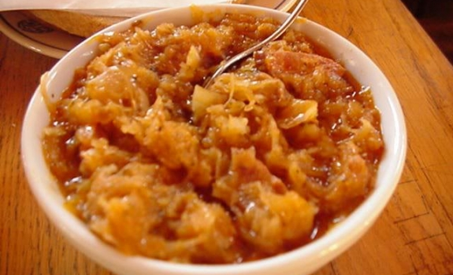

valgis
Valgis - vertimai, sinonimai, gramatika, statistika - dictionaries24.com

Nav Dictionaries24 .com D 24 Nemokamas žodynas Žodžių sąrašas Apie žodyną Nuorodos EN ES DE FR IT PT NL RU NO SE FI DK CZ PL HU TR GR UK AL BG BY EE HR IS LV MK RO SI SK Nemokamas žodynas Žodžių sąrašas Valgis Žodis: valgis
Susiję žodžiai: valgis
valgis is keliu keptos ir virtos maltos mesos produktu, valgis is farso, valgis pries miega, valgis is kapotos mesos, valgis is troskintu pailgu jautienos gabaleliu, valgis sportuojantiems, valgis pries treniruote, valgis i namus, valgis pries sporta, valgis is keliu keptos ir virtos maltos mesos produktu tam tikru budu paruostas ir apkeptasSinonimai : valgis
miltai, rupūs miltai, kukurūzų miltai, valgis, valgymas, maistas, penas, mitalas, patiekalas, indas, lėkštė, dubuo, įdubimas, valgymo laikas, pajuokos objektas, pajuoka, pašaipa, lerva, vikšras, kirmėlė, kirminas, mėsa, minkštimas, turinys, esmė, mėgstamas užsiėmimas, kursas, vinis, smeigtukas, daigstymas, daigstas, netvarka, valgykla, painiava, maišatis, kakaVertimai : valgis
Žodynas anglų Vertimai eating, food valgis angliškaiŽodynas ispanų Vertimai comestible, alimento, comida, sustento valgis ispaniškai
Žodynas vokiečių Vertimai nahrungsmittel, essen, nahrung, futter, essend, ... valgis vokiškai
Žodynas prancūzų Vertimai pâture, pitance, alimentaire, repas, manger, ... valgis prancūziškai
Žodynas italų Vertimai alimento, nutrimento, cibo, vitto, vivanda valgis itališkai
Žodynas portugalų Vertimai acariciar, alimento, alimentos, nutrientes, comida valgis portugališkai
Žodynas olandų Vertimai gerecht, etenswaar, voedingsmiddel, voeder, voedsel, ... valgis olandiškai
Žodynas rusų Vertimai пропитание, пища, кушанье, пищевод, продовольствие, ... valgis rusiškai
Žodynas norvegų Vertimai mat, føde, næring valgis norvegiškai
Žodynas švedų Vertimai föda, mat, kost, näring valgis švediškai
Žodynas suomių Vertimai ravinne, rehu, elintarvike, ravinto, ruoka, ... valgis suomiškai
Žodynas danų Vertimai mad, næringsstof, næring, føde valgis daniškai
Žodynas čekų Vertimai potravina, strava, krmivo, jídlo, potrava, ... valgis čekiškai
Žodynas lenkų Vertimai wyżywienie, żywność, pokarm, spód, jadło, ... valgis lenkiškai
Žodynas vengrų Vertimai étkezés, éti valgis vengriškai
Žodynas turkų Vertimai besin, yemek valgis turkiškai
Žodynas graikų Vertimai φαγητό, τροφή valgis graikiškai
Žodynas ukrainiečių Vertimai їжа, корм, їда, продовольство, харч, ... valgis ukrainietiškai
Žodynas albanų Vertimai gjellë valgis albaniškai
Žodynas bulgarų Vertimai храна valgis bulgariškai
Žodynas baltarusių Vertimai спажытак, ежа, харчаванне, пажытак, страва, ... valgis baltarusiškai
Žodynas estų Vertimai söök, söömine valgis estiškai
Žodynas kroatų Vertimai hrana, jesti, jelo, prehrane, ishrane, ... valgis kroatiškai
Žodynas islandų Vertimai matur, át, áta, fæði valgis islandiškai
Žodynas lotynų Vertimai alimentum, alimonium valgis lotyniškai
Žodynas latvių Vertimai uzturs, ēdiens, barība valgis latviškai
Žodynas makedonų Vertimai храна valgis makedoniškai
Žodynas rumunų Vertimai aliment, nutritiv, bucate valgis rumuniškai
Žodynas slovėnų Vertimai hrana, pokam, živilo valgis slovėniškai
Žodynas slovakų Vertimai potraviny, potrava, jedlo, strava, pokrm valgis slovakiškai
Populiarumo statistika: valgis
Labiausiai ieškoma pagal regionus
Vilniaus apskritis, Alytaus apskritis, Klaipėdos apskritis, Kauno apskritis, Marijampolės apskritisLabiausiai ieškoma pagal miestus
Kaunas, VilniusAtsitiktiniai žodžiai
valdžia valgymas brangu vertimai paskola gramatika svyruoklė sinonimai pūlinys gramatika pasiekimas eksportuoti čekis sinonimai sinagoga sinonimai išprievartavimas sveikinti vertimai tik angliškai potvarkis angliškai irkluoti angliškai kibiras angliškai požymis angliškai sąnarys angliškai būti angliškai eigulys angliškaiDictionaries24.com - Išbandykite mūsų žodyną ir pamatykite kaip paprasta juo naudotis.
Posted by Jack  Read more
Read more  Comments (15)
Comments (15)  2020.10.27 08:01
2020.10.27 08:01